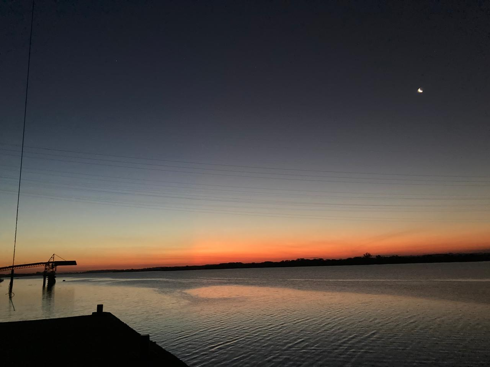

Hobbies
Futebol
Costumo frequentar o beira rio, estádio do Inter, sempre que possível. Além disso, jogo futebol society 3x por semana.

Corrida
Comecei junto da minha namorada a correr pela cidade, iniciamos com uma meta de correr pelo menos 3x por semana e tem sido muito bom!
